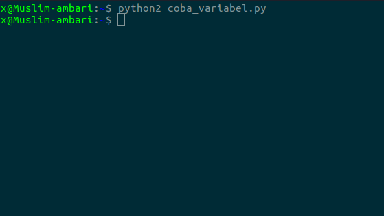
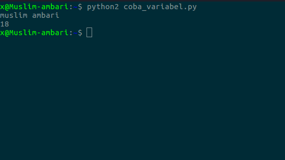
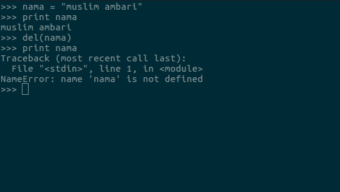

variabel dan type data
pada kesempatan kali ini kita akan belajar variabel dan type data
apa itu variabel dan type data?
variabel adalah tempat menyimpan data sedangkan type adalah
type data adalah jenis data yang tersimpan dalam variabel.
nilai yang tersimpan dalam variabel bisa kita ubah ubah.
membuat variabel di python
contoh penulisan variabel dalam python:
nama_variabel = "isi variabel"
biar lebih paham mari kita praktekan.
buat file baru bernama coba_variabel.py dan ikuti kode berikut.
nama = "muslim ambari"
umur = 18
save, dan jalankan

kenapa tidak muncul apa apa?
karena variabelnya belum kita panggil, bagaimana cara memenggilnya ?
cara memanggil variabel cukup mudah. tinggal cetak saja dengan 'print' lalu diikuti dengan
nama variabelnya, Contoh:
# membuat variabel
nama = "muslim ambari"
umur = 18
# memanggil variabel
print nama
print umur
Hasilnya:

aturan penulisan variabel di python
1.Nama variabel boleh diawali menggunakan huruf atau garis bawah/undescore Contoh: namaVariabel, nama_variabel, __variabel
2.Nama depan variabel tidak boleh menggunakan angka, boleh menggunakan angka tapi diakhir nama variabel Contoh: nomor5, nomor2
3.Karakter dalam nama variabel bersifat case-sensitif artinya huruf besar dan kecil dibedakan Contoh: namaVariabel, namavariabel, keduanya adalah variabel yng berbeda
4.Nama variabel tidak boleh menggunakan kata kunci yang sudah dimiliki python seperti: for, if, while, dsb.
menghapus variabel
Kita bisa menghapus variabel dengan fungsi del(),
Contoh:

type data
seperti yang sudah saya jelaskan tadi. type data adalah isi variabelnya
untuk mengisi data kedalam variabel kita harus tentukan type data apa
yang akan kita simpan kedalam variabel String, integer, atau boolean
pengertian type data:
1. String adalah text
2. Integer adalah angka
3. Boolean adalah type data yang hanya memiliki dua nilai yaitu True dan False
untuk type data String (text) harus di jepit dengan tanda petik ("")
sedangkan untuk type data Integer (angka) dan Boolean tidak usah menggunakan tanda petik juga bisa.
Contoh:
nama = "muslim ambari" # string
umur = 18 # integer
jones = True # boolean
sekian pembelajaran tentang variabel dan type data, sekarang silahkan pelajari tutorial selanjutnya
Lanjut